About Me


My name is Zunaira Arshad. I am currently a student at Manchester Metropolitan University studying Web Development Bsc (Hons).
I am a Front End Web Developer, UX Designer and I have photograpy skills. If you have a project that needs some creative injection, then that's where I come in!
My job is to build your website so that it is accessible and responsive but at the same time, attractive. My aim is to convey your message and identity in the most creative way possible.
Portfolio
Activity Addict
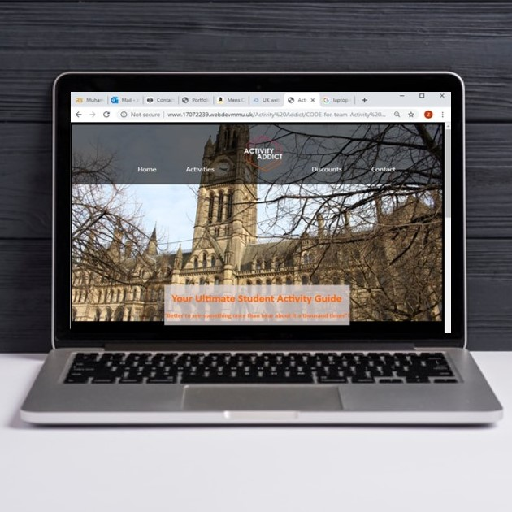Activity Addict is a guide website for International and other students to be able to explore the casual activities within Manchester. This website is a part of my degree/ coursework from the second-year website development unit.
Good Grub

‘Good Grub’ is a food delivery/subscription service for students. This website is a part of my degree/ coursework from the second-year Digital Project Management unit.
Isong
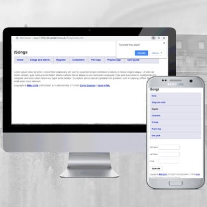This is a music website that I developed in first year of my University for Web Programming unit. The website is aimed to collect users information, such as email addresses, names and who their favourite artists were through a mobile app. This was my first time coding with other languages then HTMl, I created a background database for this site. It was a great experience developing knowledge over CSS, Json, JavaScript and PHP languages.
Json
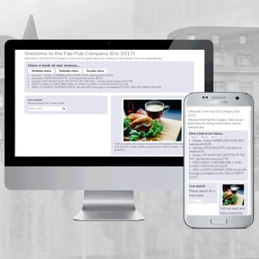This is a PHP project that I built in second year of my University for Web Programming unit. In this I created a real time search bar and a restaurant menu following a provided example. I developed this using mainly Json, JavaScript and PHP, I am not an expert with these coding languages, but this is a part of my industry and I enjoy experiencing new skills.
Gallery
I really enjoy photography, and I want to develop this talent, so I have chosen some of my favourite shots to demonstrate a part of my second year's course work and show my skills.
 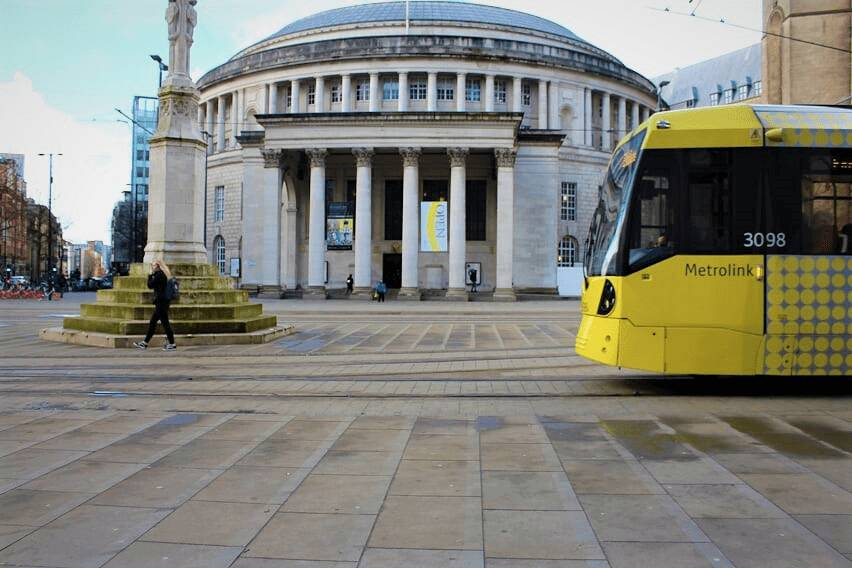
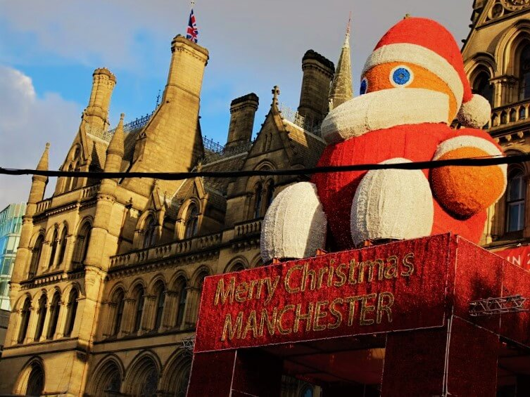
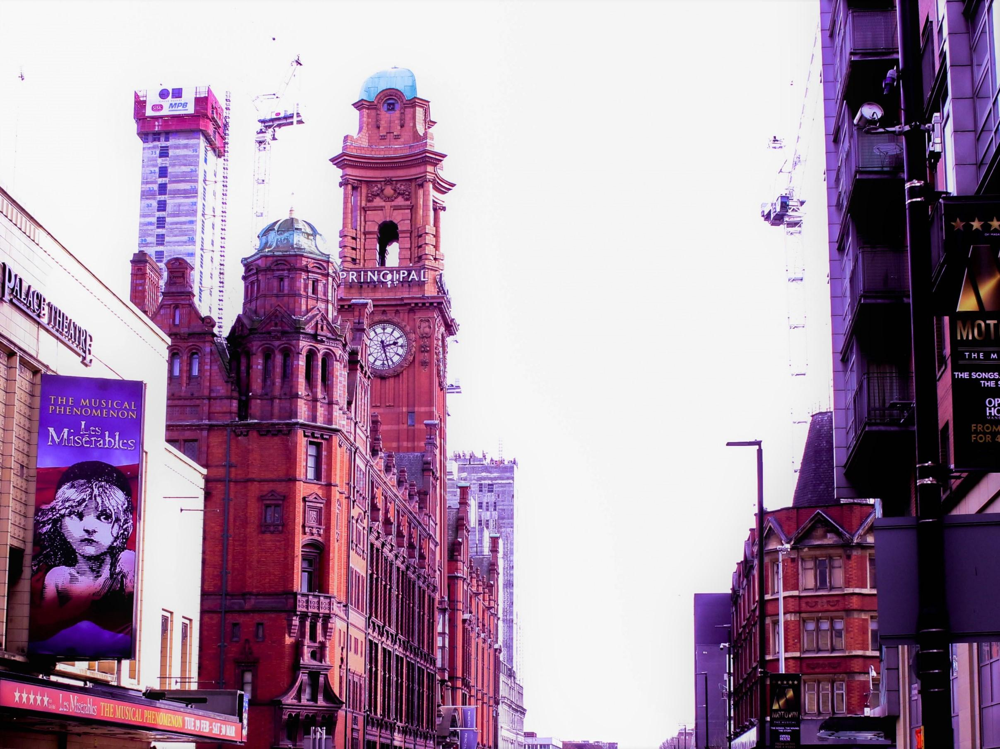
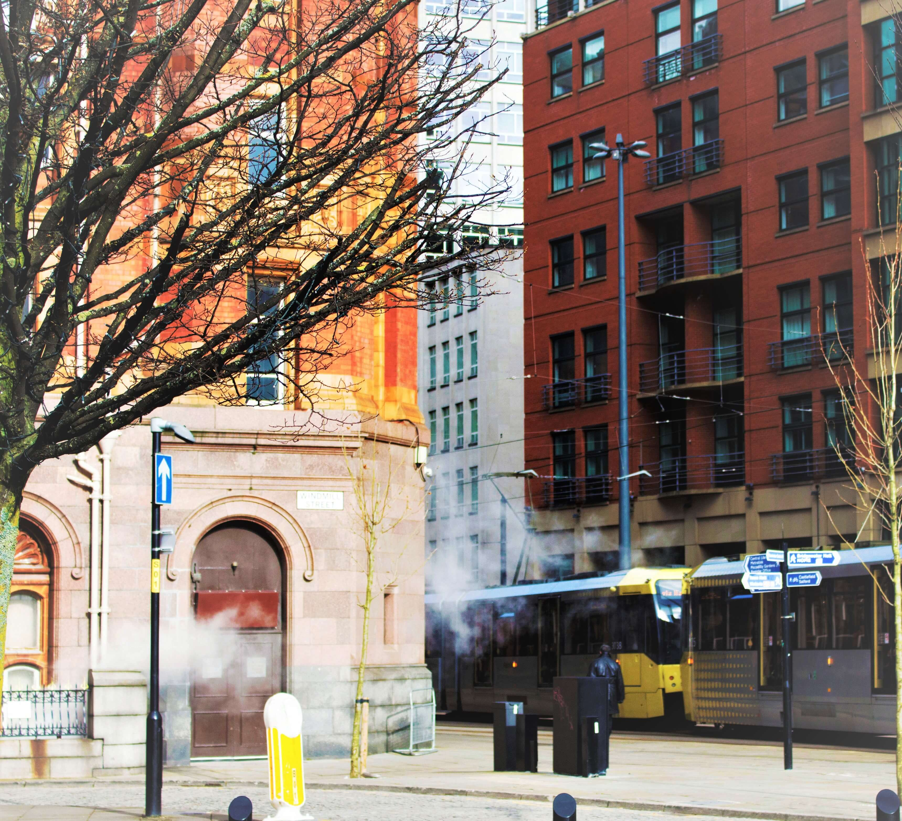
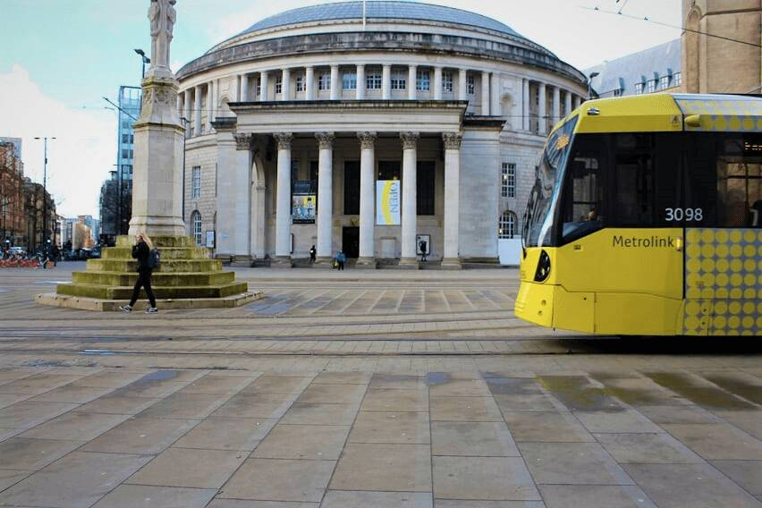
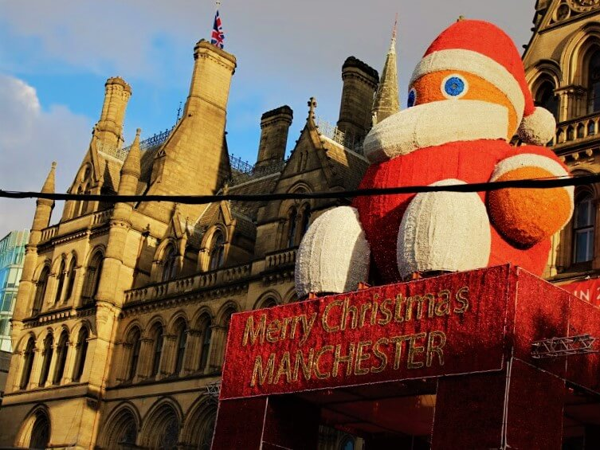
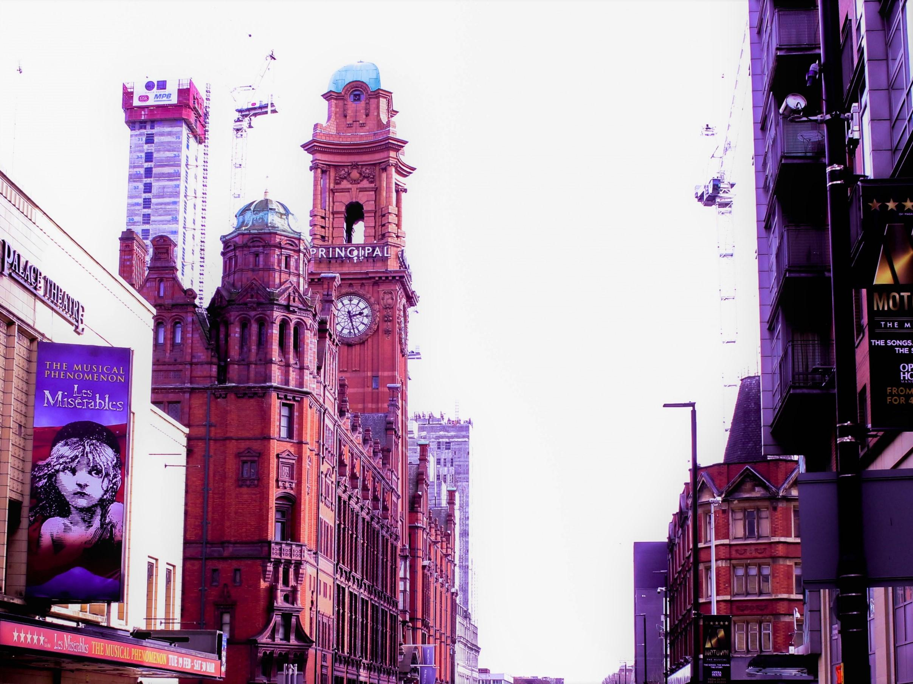
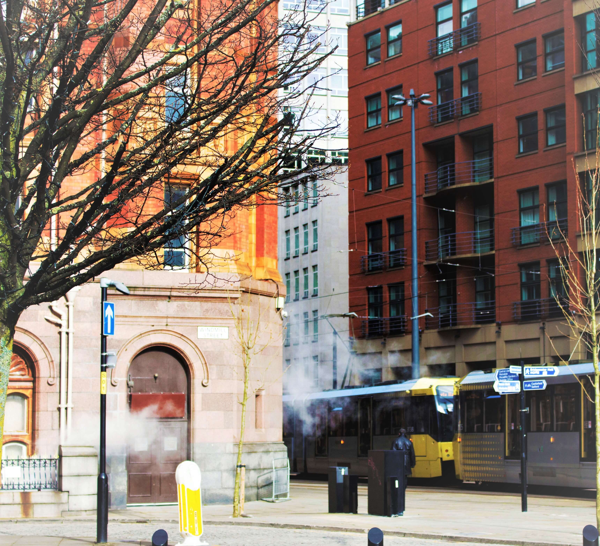

 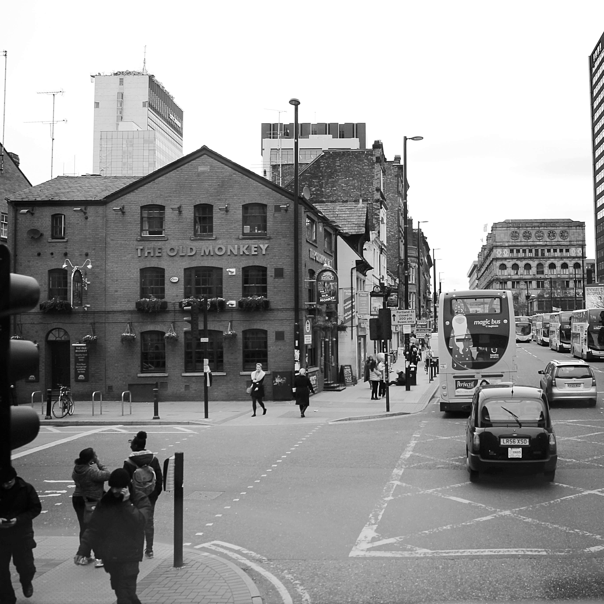
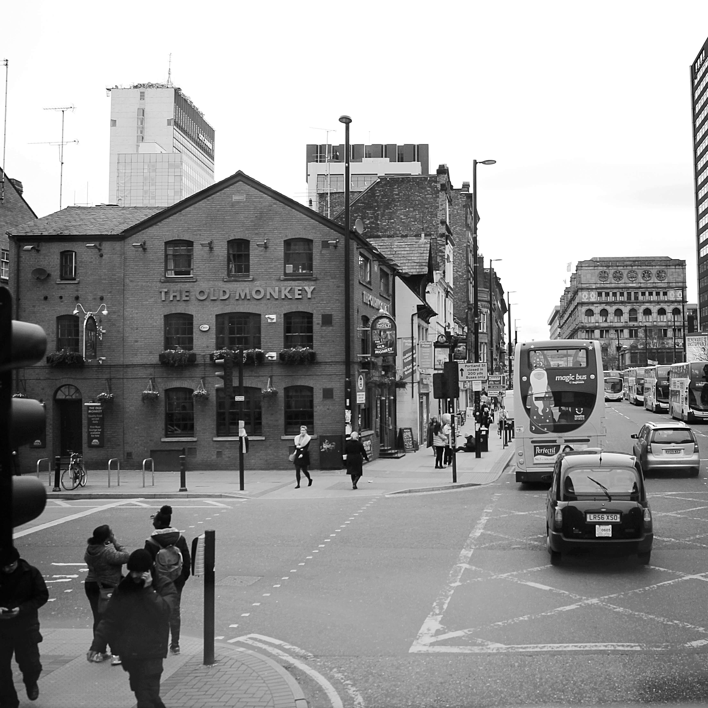
'All these shots have been taken with Canon EOS 4000D Digital SLR Camera.'